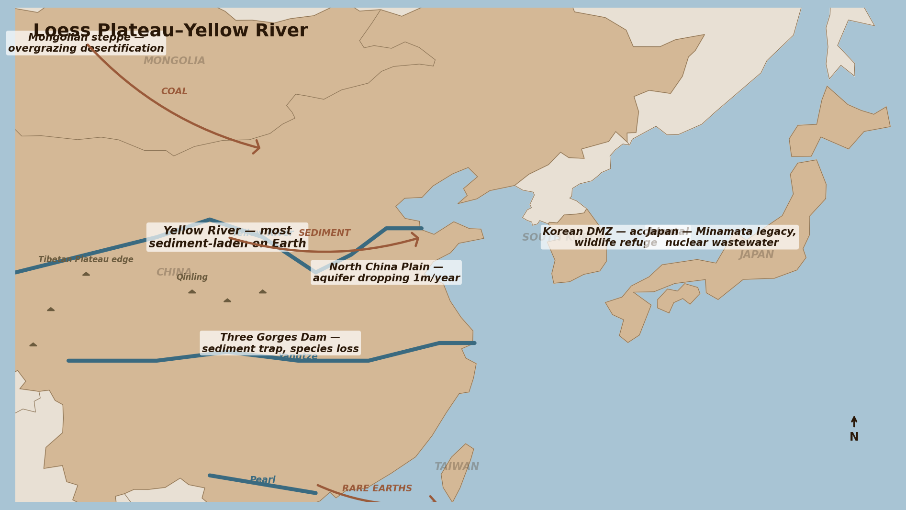

Loess Plateau–Yellow River
where loess hundreds of metres deep erodes into the river that must feed a billion without silting shut
In Bayan Obo, on the edge of Inner Mongolia where the steppe meets the Gobi, Mongolian herders once grazed sheep on grasslands that stretched unbroken to every horizon. The grass is gone now. In its place: the largest rare earth mine on earth, an open wound 48 square kilometres wide, its tailings lake so radioactive that nothing grows within a mile of its shore.
Lives Lived Here
Before dawn in the Yangtze basin, a woman in Hubei Province walks to her family's rice paddy — six-tenths of a hectare, barely enough to feed two generations. She manages an integrated paddy-fish system her mother taught her: rice above, carp below, each feeding the other in a cycle that requires no fertiliser and produces no waste. Her husband left for the Foxconn plant in Zhengzhou eight months ago. He sends money home through WeChat Pay and sees his daughter on video calls she is too young to remember.
In Pohang, South Korea, a steelworker finishes a twelve-hour shift at POSCO's mill, where Australian iron ore becomes the hull plates for LNG carriers that will transport Qatari gas to Japanese power plants. He earns a decent wage by Korean standards. His Indonesian counterpart who dug the ore does not. The steelworker does not think about Indonesia; he thinks about the apartment his daughter needs when she starts university in Seoul, and whether the rent in Gangnam will consume everything he has saved.
In Hsinchu, a TSMC engineer checks the yield rate on 3-nanometre chips that will become the processors in phones assembled by workers in Shenzhen who earn in a month what the chip is worth at wholesale. She drinks water from a tap connected to a reservoir that has not been full since 2020. The farmers on the Chianan Plain who once drew from the same reservoir have been told to leave their fields fallow this season so the fab can keep running. They were not consulted; they were informed.
In the Yellow Sea, a Chinese fisherman from Shandong motors past the line where the coastal catch used to be reliable. The squid are gone inshore — decades of factory trawling and industrial effluent have seen to that. He pushes further out, into waters that Korean and Japanese coastguards patrol, because the alternative is returning empty to a family that has no other income.
In the Yellow Sea, a Chinese fisherman from Shandong motors past the line where the coastal catch used to be reliable. The squid are gone inshore — decades of factory trawling and industrial effluent have seen to that. He pushes further out, into waters that Korean and Japanese coastguards patrol, because the alternative is returning empty to a family that has no other income.

Reference map. Country boundaries and features are approximate.
What Presses
The weight on Loess Plateau–Yellow River
North China Plain — The aquifer beneath the North China Plain has dropped 40 metres in thirty years. This is the ground that grows 60% of China's wheat and much of its maize. The wells go deeper each season; the pumps cost more to run; the water that comes up is older, saltier, closer to the bottom of what is there. Above ground, the Yellow River — diverted, dammed, and allocated at 160% of its flow — runs dry in its lower reaches for months at a time. The farmers of Shandong and Henan do not experience this as a national water crisis. They experience it as a pump that takes longer to prime, a well that needs to go deeper, a water bill that consumes more of the harvest. The South-to-North Water Diversion was built to solve this. It transfers the problem.
Bayan Obo, Inner Mongolia — Where Mongolian herders once grazed sheep on open steppe, the world's largest rare earth mine has left a tailings lake eleven kilometres long, laced with thorium and uranium. The herders were relocated to apartment blocks on the edge of Baotou. Their livestock was sold. Their grassland is a pit. The rare earths that come from this ground are in every electric vehicle, every wind turbine, every smartphone, every missile guidance system. The herders were not consulted about the green transition. They were moved to make room for it.
Hsinchu, Taiwan — TSMC's Fab 18 in Tainan consumes 156,000 tonnes of ultrapure water every day. In the 2021 drought, rice farmers on the Chianan Plain were ordered to leave their paddies fallow — not asked, ordered — so the water could flow to the fabs instead. The farmers complied because they had no choice, and because the government compensated them at rates below what the harvest would have earned. The chips made with that water went into iPhones that retail for forty times what the farmer's annual rice income would have been. The farmer knows this arithmetic. He does it every season.
Four resource streams flow out of East Asia to the world — rare earth elements, semiconductors, steel, and assembled electronics — worth hundreds of billions at destination. What does not appear on the invoice is the water consumed, the grasslands razed, the aquifers drawn down, the fishing grounds depleted, and the 300 million workers whose migration from village to factory is the largest human displacement in history, undertaken not by force of arms but by force of economics. rare earth elements, iron ore, coal, finished steel, semiconductors and wafers leaving; precipitation 48% of normal; 1,102 fires (7 days).
The phone in your hand is a map of East Asia's pressures. Its rare earth magnets began as grassland in Inner Mongolia. Its processor was etched with water that a Taiwanese farmer cannot use. Its assembly was done by hands in Shenzhen that will not hold the children waiting in a village in Anhui. You cannot put the phone down and you cannot un-know this. Sit with that for a moment. It is the beginning of honest prayer.
For Prayer
For the land itself — water stress averaging 39% across the region. For pastoralists seeking grazing, for farmers awaiting rain, for the rivers and aquifers that sustain everything. For the land beneath their feet, from which rare earth elements and iron ore, coal, finished steel is extracted to benefit those far away.
Especially for China, facing the most severe convergence of crises in this region. For those making impossible decisions about whether to stay or flee, and for those who cannot choose.
For humanitarian workers and missionaries in East Asia — for their safety, their courage, and their capacity to reach those most in need.
For every act of resistance and care in East Asia — communities sharing food, farmers saving seed, neighbours sheltering neighbours. That these small acts of defiance outlast the crisis.
Out of the depths have I cried to you, O Lord; Lord, hear my voice; let your ears consider well the voice of my supplication.
Most merciful God, who by the death and resurrection of your Son Jesus Christ delivered and saved the world: grant that by faith in him who suffered on the cross we may triumph in the power of his victory; through Jesus Christ your Son our Lord, who is alive and reigns with you, in the unity of the Holy Spirit, one God, now and for ever.
Amen.
Seeds of Hope
In Bayan Obo, displaced Mongolian herders have filed repeated petitions documenting contamination of grazing land and water sources near the rare earth tailings dam — each petition an act of civic courage in a system that does not reward complaint. In the Yangtze basin, smallholder women managing integrated rice-fish systems maintain a farming practice that predates industrial agriculture and outperforms it on every ecological metric — no fertiliser, no waste, protein and grain from the same half-hectare.
For Reflection
How might sitting with this discomfort change how you pray?
What connects your daily life to this crisis?
Looking Ahead
- The structural pressures on East Asia are accelerating, not resolving.
- China's water crisis deepens with each season of over-extraction — the Yellow River's dry spells lengthen, the North China Plain aquifer drops further, and the South-to-North diversion transfers the problem rather than solving it.
- Taiwan's semiconductor dominance makes the island a geopolitical flashpoint whose disruption would trigger global economic crisis, while its water infrastructure remains vulnerable to the droughts that climate models project will intensify.
- China's rare earth export controls -- any new restrictions on neodymium or dysprosium processing affect global EV and wind turbine supply chains and intensify pressure on Bayan Obo communities
- Taiwan Strait tensions -- TSMC produces 90% of advanced semiconductors; any disruption to Hsinchu operations reshapes the entire global electronics supply chain overnight
- Yellow Sea summer dead zone -- agricultural runoff from the Yangtze and Han rivers creates oxygen-depleted zones that collapse remaining fisheries for Korean and Chinese coastal communities
Carry This
What to bring with you from this briefing
Take Action
Organizations working at the nodes this briefing traces
Hong Kong-based organization documenting labor rights conditions across China's manufacturing and construction sectors. Maintains a strike map and worker grievance database tracking collective actions, wage arrears, and occupational safety incidents.
Documents the labor conditions inside the electronics factories the briefing traces — Foxconn assembly lines, rare earth processing plants, and garment workshops where migrant workers from rural provinces bear the health and safety costs of global supply chains for smartphones, batteries, and textiles.
Satellite monitoring platform tracking fishing vessel activity across the Pacific and East China Sea. Provides open data on distant-water fleet movements, dark fishing activity, and incursions into other nations' exclusive economic zones.
Makes visible the distant-water fishing fleet the briefing documents — Chinese vessels operating across the Pacific, West Africa, and South America, whose catch depletes stocks that coastal communities depend on, while labor conditions on these vessels involve forced labor of migrant fishers from Southeast Asia.
Campaigns against destructive dam projects and for community-centered river governance. Documents the downstream impacts of China's dam cascades on the Mekong and the ecological collapse of the Yellow River from over-extraction and industrial pollution.
Addresses the river systems the briefing traces — where upstream damming and industrial water extraction on the Yellow River leave downstream farming communities without irrigation, and Mekong dams in Yunnan alter sediment flows that sustain fisheries and rice paddies across Southeast Asia.
Independent monitoring organization working with public sector buyers in Europe to improve conditions in electronics supply chains. Connects factory workers in China, South Korea, and Southeast Asia with institutional procurement leverage.
Targets the electronics supply chain the briefing maps — from rare earth extraction in Inner Mongolia through component assembly in Shenzhen and Seoul to consumer markets, using procurement power to improve conditions for the workers whose labor is embedded in every device but invisible to end users.
South Korean civil society coalition monitoring the overseas operations of Korean conglomerates including Samsung, LG, POSCO, and Hyundai. Documents labor rights, environmental, and community impacts across supply chains.
Holds accountable the Korean conglomerates the briefing identifies as key nodes — Samsung's semiconductor fabs, POSCO's steel mills sourcing iron ore from contested sites, and Hyundai's shipbuilding operations employing migrant labor, tracing corporate responsibility across the region's interconnected manufacturing networks.
Generated 2026-03-18